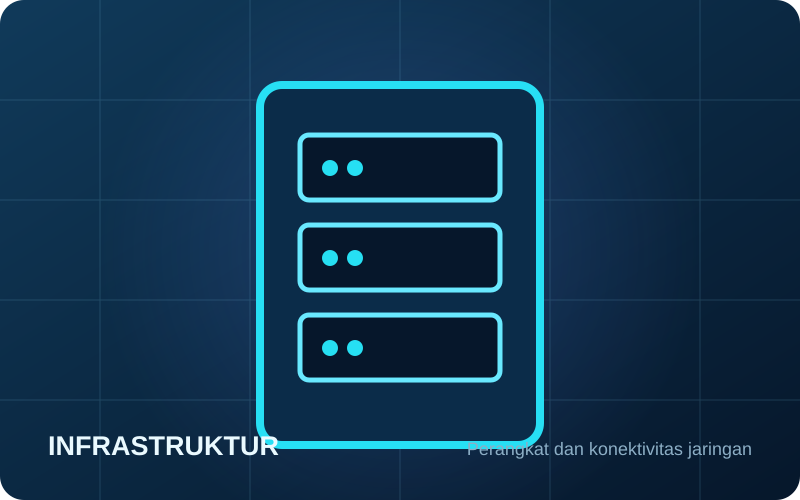

⌁
Instalasi Fiber Optik
Penarikan kabel, penyambungan (splicing), terminasi, pengujian, dan pemeliharaan jaringan fiber optik.
WIRATEL menghadirkan solusi telekomunikasi, fiber optik, FTTH, CCTV, dan infrastruktur jaringan yang andal untuk mendukung kebutuhan masyarakat, bisnis, dan instansi di Kepulauan Riau.

Kami menyediakan layanan yang terintegrasi untuk mendukung kebutuhan telekomunikasi, bisnis, pemerintah, dan masyarakat.
Penarikan kabel, penyambungan (splicing), terminasi, pengujian, dan pemeliharaan jaringan fiber optik.
Perencanaan, pembangunan, dan implementasi jaringan Fiber to the Home untuk kebutuhan konektivitas rumah dan bisnis.
Pemasangan kamera pengawas, penataan kabel, konfigurasi perangkat, dan integrasi sistem pemantauan.
Pembangunan dan instalasi infrastruktur jaringan data, perangkat telekomunikasi, dan jalur pendukung konektivitas.
Pemeriksaan berkala, penanganan gangguan, perawatan perangkat, dan dukungan teknis untuk menjaga kinerja jaringan.

PT WIRA TELCO NETWORK INDONESIA (WIRATEL) merupakan perusahaan yang bergerak di bidang telekomunikasi dan infrastruktur jaringan. WIRATEL berfokus pada instalasi fiber optik, pembangunan jaringan Fiber to the Home (FTTH), instalasi CCTV, serta pembangunan dan pemeliharaan infrastruktur telekomunikasi. Dengan mengutamakan kualitas pekerjaan, ketepatan pelaksanaan, dan pelayanan yang responsif, WIRATEL berkomitmen mendukung kebutuhan konektivitas masyarakat, bisnis, dan instansi di wilayah Kepulauan Riau.
Visual ilustratif yang menggambarkan jenis pekerjaan dan layanan yang disediakan WIRATEL.

Ilustrasi konsep pekerjaan penarikan dan penanganan kabel fiber optik.

Ilustrasi konsep jaringan akses fiber optik menuju rumah dan bangunan.

Ilustrasi konsep pemasangan dan integrasi sistem kamera pengawas.
Ilustrasi konsep perangkat dan infrastruktur konektivitas jaringan.
Catatan: gambar pada galeri ini merupakan ilustrasi original untuk memperkenalkan jenis layanan, bukan dokumentasi proyek pelanggan yang telah selesai.
Diskusikan kebutuhan jaringan dan proyek Anda bersama WIRATEL.